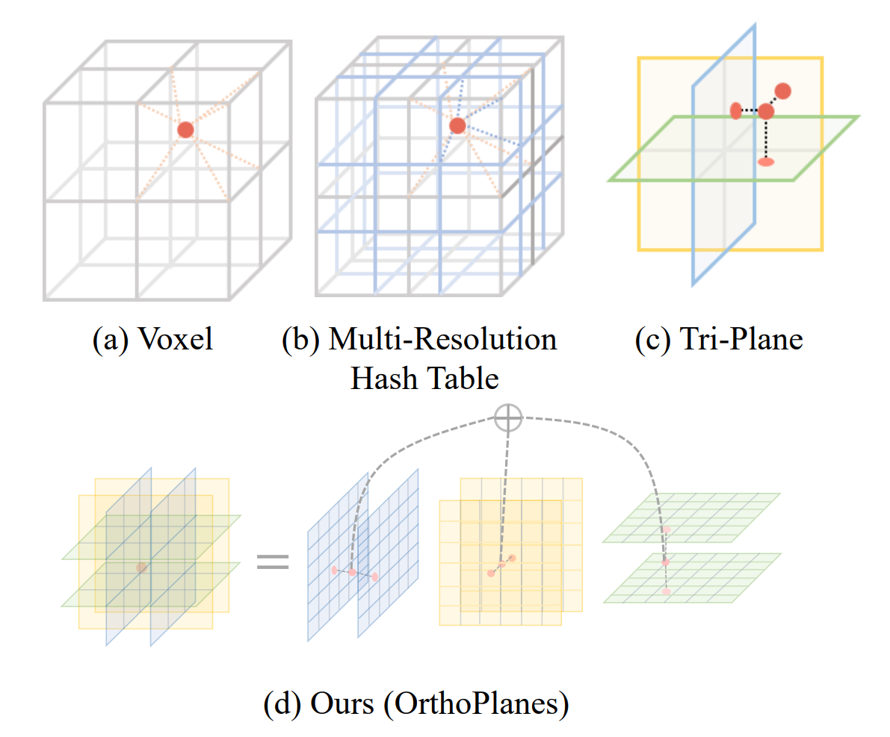
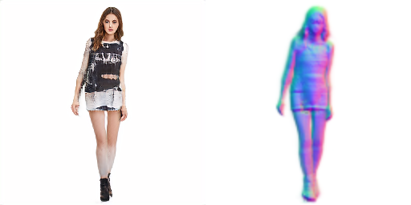
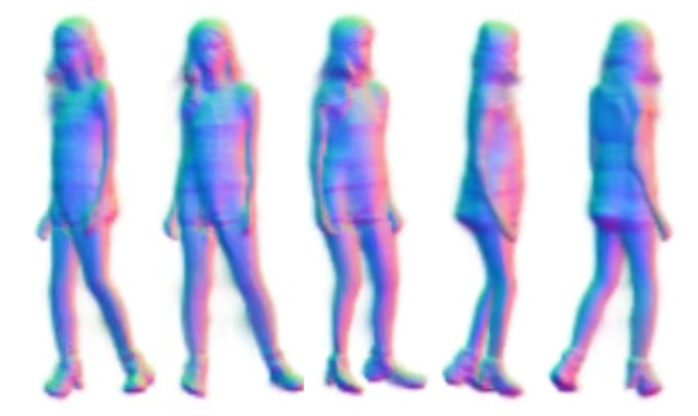
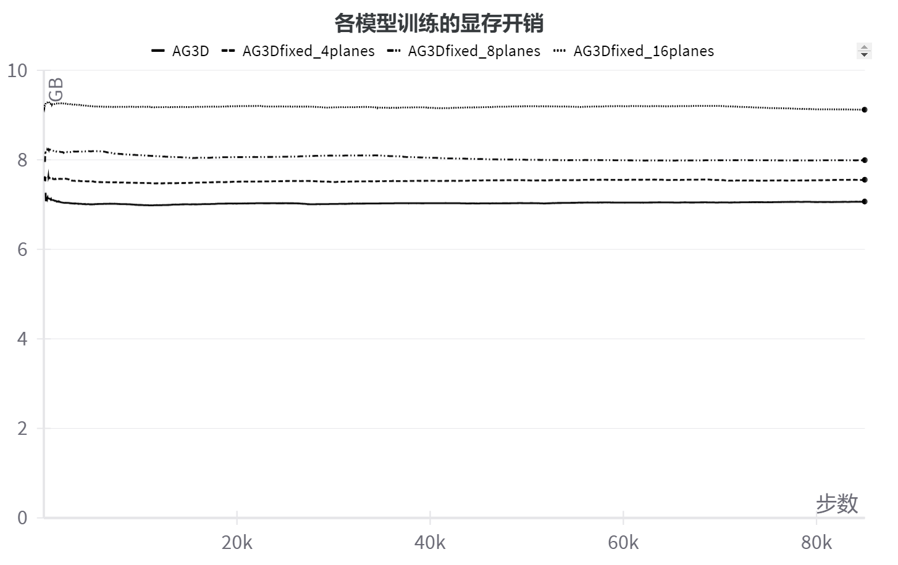
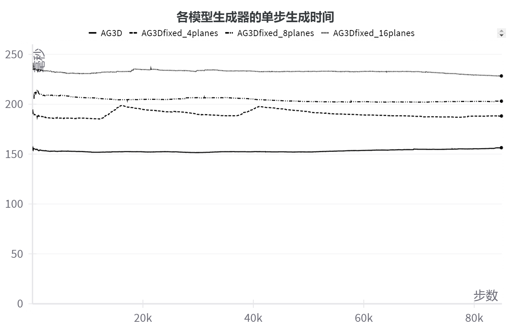
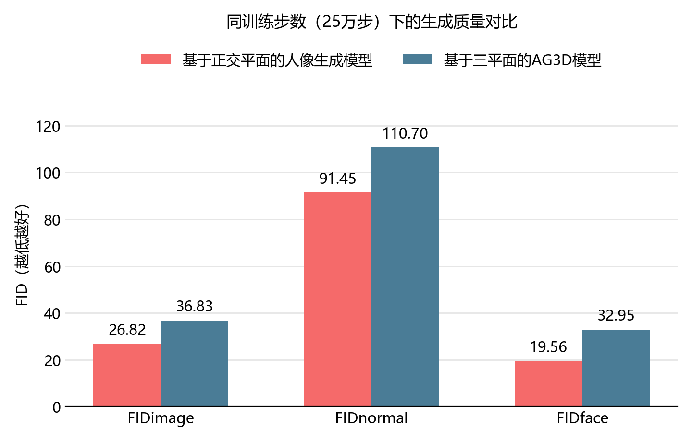
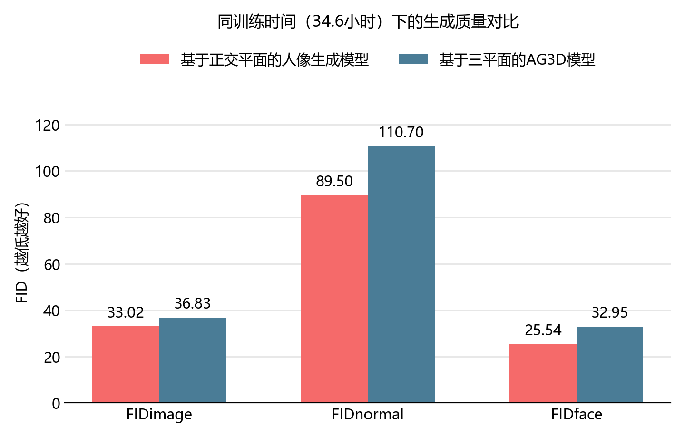

Background and Problem
Virtual reality, virtual try-on and film production all need huge numbers of images of "people" in different poses, from different viewpoints, in different styles. Shooting real people or modeling them by hand is expensive, so a natural idea arises: can a machine "draw" realistic people by itself, instead of putting a real person in front of the camera every time? Human image generation models are aimed at exactly this goal: give them a random noise vector and they produce a realistic image of a person.
Ordinary 2D generative models have an inherent weakness: they only paint on a "flat canvas" and have no understanding of what the three-dimensional world looks like. You cannot ask one to "turn this person to the side and draw another one", because it has no notion of 3D space. For scenarios that need multi-view consistency (such as building 3D character models for games or film) this is fatal. To solve it, a generative model has to genuinely "understand" 3D space instead of working only on a 2D plane, and 3D-aware generative models came about for this reason: they encode information in 3D space and then render it into 2D images, so the generated person is naturally 3D-consistent: whatever the camera angle, a plausible human geometry can be generated. The price is also obvious: slow training, heavy GPU memory use, and great difficulty reaching high resolution. Behind all this lies one key technical choice, namely "how to encode information in 3D space". The design of this representation directly determines both the training efficiency and the ceiling of generation quality. My undergraduate thesis was built around this choice: could a different 3D representation do better on the human image generation task?
Related Work and Method Design
This research is based on generative adversarial networks (GANs). A GAN is an image generation framework proposed by Goodfellow et al. in 2014, made up of a generator and a discriminator. The principle is a bit like "a counterfeiter and a currency detector competing against each other": the generator keeps trying to produce fakes convincing enough to pass as real, while the discriminator keeps learning to tell real from fake. Both improve together during training, until the generator can draw images whose authenticity is hard to judge with the naked eye. Within this generative framework there are many ways to encode information in 3D space. Here are the main directions explored:
Explicit representations (depth/normal maps, voxels): Early methods used "2.5D" representations such as depth maps or normal maps. They work directly with mature 2D convolutional networks and synthesize high-resolution images quickly, but they cannot fully represent 3D geometry, and view consistency is hard to guarantee. Voxel grids are a more thorough explicit 3D representation: regular, and compatible with standard 3D convolutions, but their memory cost grows cubically with resolution (O(N³)), making high resolution hard to reach.
Neural fields (implicit representations): Represented by NeRF (Neural Radiance Fields), proposed in 2020. The idea is to use a multi-layer perceptron to memorize "what color and how solid any point in 3D space looks when viewed from any direction". At render time, virtual rays are cast along the line of sight, the points along each ray are queried one by one and accumulated to "render" an image. It never needs to build an actual 3D model (a mesh, a point cloud, etc.), and can learn the 3D structure of a scene from photos alone. This representation is memory-efficient, but rendering requires querying a deep network point by point, which is slow.
Tri-plane representation (Tri-plane, EG3D, CVPR 2022): A new 3D representation proposed jointly by NVIDIA and Stanford University in 2022. EG3D projects points in 3D space onto three mutually orthogonal feature planes to query features, which are then aggregated and decoded. The complexity of this "hybrid explicit-implicit" representation is O(N²), far more efficient than the O(N³) of voxels, while being more expressive than a purely implicit one, so it greatly improves training efficiency at high resolution while preserving image quality. After EG3D, AG3D, proposed by Zijian Dong et al. at ICCV 2023, built a human generation model on top of the tri-plane representation: a holistic 3D generator models the human body together with loose clothing, a Fast-SNARF articulation module handles pose deformation, and a normal discriminator and a face discriminator improve geometry and facial quality. AG3D is the baseline that my work is directly built on.
Orthogonal-plane representation (OrthoPlanes, ICCV 2023): Although the tri-plane representation is efficient, it uses only three orthogonal projections to express 3D information, which falls short in expressiveness for non-rigid subjects like the human body, whose poses and appearance vary greatly: three projection directions cannot cover enough 3D detail. The idea of OrthoPlanes is to extend the tri-plane's "one plane per axis" to "K parallel planes per axis", indexing 3D information through multiple cross-section projections with positional embeddings. This encodes more explicit position and distance information, at the cost of computation that grows linearly with the number of planes K (complexity O(KN²)). The OrthoPlanes paper itself was mainly validated on face (FFHQ) and half-body portrait (SHHQ) datasets, and did not specifically address full-body humans, whose poses vary far more dramatically.

What my thesis does is migrate the more expressive orthogonal-plane representation of OrthoPlanes into the tri-plane-based human generation framework AG3D, replacing its original feature encoding and volume rendering to build an "orthogonal-plane AG3D", and then systematically evaluate the effect of this replacement, including changes in training cost and generation quality.
Experimental Results
For training data I used a subset of 8,000 images from the DeepFashion dataset, filtered by EVA3D. The people in these images vary widely in pose and clothing style, which suits verifying pose correctness and clothing deformation.
Results
After training, the model can generate human images and normal maps with controllable viewpoint and pose. Here are the generated results.

Qualitatively, the human images generated by the trained model show clear facial features and clothing details, and the normal maps show a plausible 3D geometry. What better demonstrates "3D consistency" is the following set of results: sampling the same 3D space from different directions yields multi-view consistent human images and the corresponding normal maps. The generated humans still obey a consistent 3D structure across views, which is exactly the core value that distinguishes 3D-aware generative models from purely 2D ones.

Training cost
I set the number of planes per axis K of the orthogonal planes to 4, 8 and 16, trained each for the same number of steps together with the original AG3D (equivalent to tri-plane / K=1), and recorded GPU memory use and per-step generation time.


The result is straightforward: the larger K is, the higher both memory use and training time. At K=8, compared with the original AG3D, memory use rises by about 14% and the generator's per-step generation time by about 40% (the discriminator is unaffected, so the overall training time grows less than the generator's, about 14% as measured). This matches expectations: orthogonal planes essentially trade more storage and computation for more explicit 3D information, a tradeoff understood from the start of the design.
Generation quality
With K=8, I trained for 250,000 steps (about 30 hours) and evaluated quantitatively with FID (Fréchet Inception Distance; lower means generated images are closer to real ones), measuring three metrics: the full image (FIDimage), the normal map (FIDnormal) and the face region (FIDface).


At the same number of training steps, the orthogonal-plane model beats the original AG3D on all three metrics: full image, normal map and face region. At the same training time, even though the orthogonal-plane model runs fewer steps, its generation quality is still better across the board. This shows that the quality gain from the orthogonal-plane representation is enough to offset its training overhead.
Takeaways and Reflections
This project was my first experience of the complete research workflow: reading papers, reproducing, improving and evaluating. One very important thing about scientific research is to stand on the shoulders of giants: first catch up with the current state of the art, and only then think about improvements. It also gave me a habit: whenever I face a relatively complex task afterwards, I first look at existing methods, quickly reproduce an existing solution, check whether it fits my needs, and then customize it on that basis, rather than groping around from scratch.
Another feeling is that technology has schools of thought, and it also becomes obsolete. In image generation there are two paths, GAN and Diffusion; in 3D representation there are two, NeRF and 3D Gaussian Splatting. I worked on this topic in 2024, right at a turning point where these lines were swapping places. Gaussian splatting was only proposed in 2023 and took off rapidly in 2024, after which it largely replaced NeRF as the mainstream choice, being much faster in both training and rendering. As for generative paradigms, Diffusion had long since overtaken GAN in image generation, and 3D generation is leaning the same way: reconstructing 3D with diffusion priors, or even feed-forward generation of 3D Gaussians directly, has gradually become a route that draws more attention than GANs. The tri-plane / orthogonal-plane line I worked on improves 3D representation within the GAN framework; frankly, it is optimizing within a branch of technology that is being replaced. You do not want to be on a sinking ship, and I genuinely realized that when doing research or choosing technology, you need a sense of the whole technical landscape of the field. In a period of rapid technological change, there is also no need to put all your eggs in one basket, because a new direction may replace the old one. Take the VLA and VLN now being pursued in robotics: in my view they are not necessarily the final answer to robot control either.